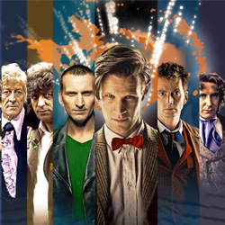

| Home | The Doctors | The Companions | The Villains |
|
|||
Doctor WhoThe Doctors
The CompanionsThe Villains
|
What Is Doctor Who?The cultish British television series Doctor Who — which celebrates its 50th anniversary with a special to be simulcast around the world on Nov. 23 — is, to its fans, a cultural institution of the highest order. To the non-Whovian public, however, the escalating volume of Who chatter as the anniversary approaches may seem like nothing but white noise. We understand: It’s the kind of pop-culture touchstone you’re supposed to know about, but that’s too complicated to even process if you don’t already get it. Like, if you weren’t born knowing about Doctor Who (which, to be fair, can seem to be the case for some Brits) then there’s no point in trying to understand it. While it’s not physically possible for the Who–less to completely catch up in time for the anniversary, it is possible to understand the basics: It’s not about a medical doctorThe Doctor can’t give you an Rx, but he is an alien Time Lord who travels through space and time to fight evil. Nor is his name “Doctor Who.” (His actual name is a secret.) When he dies, he can regenerate into a new form; 11 different actors have played the Doctor so far. He travels with a series of human companions but is not himself human, though he may look like one. The show hasn’t actually run for 50 consecutive yearsThe first version of the show ran from 1963 till 1989, and the reboot has been around since 2005, with a TV movie in the middle. But, unlike many other shows or movies that have gotten reboots, every episode and appearance is part of the same canon. (MORE: Why Doctor Who is Pop Culture Sci-Fi At Its Best) There is, of course, a specialized vocabularyIn order to understand the words coming out of fans’ mouths, you’ll need to know at least a few pieces of the show’s lingo. For example, that blue police call-box is actually the TARDIS, which stands for Time and Relative Dimension in Space; it’s a ship that travels through time and space (and while it’s meant to blend in with its surroundings, it’s been malfunctioning for 50 years now so it’s stuck as the phone booth). The Doctor’s other gadget is the sonic screwdriver. A Dalek is an alien creature that, having survived a nuclear apocalypse, must live inside a robot; they are bad. The show is importantIt’s not just that the show is long-lived and has a huge audience. Doctor Who is one of those shows that makes people think deep thoughts. To get started on understanding that layer of meaning, you can read in-depth articles like these: The New Yorker on how the show has managed to stay relevant while remaining a product of a specific time and place, by evolving the Doctor from a symbol of Britain’s desire to play a guardian-like role in world politics to a more observation-centered symbol of modern anxieties; or The Huffington Post on Doctor Who and the intersection of fandom and commercialization. There are lots of books about the series, and there’s even a documentary project about Doctor Who fandom, which was successfully crowd-funded this fall. The 50th-anniversary episode promises big plot revelationsExecutive producer Steven Moffat has said that the anniversary special, The Day of the Doctor, will “change the course of the series.” It’s already been announced that in this year’s Christmas special (coming in December) actor Peter Capaldi will take on the role of the Twelfth Doctor, so the current Doctor (played by Matt Smith) is in his last-hurrah stage. Fans already know that the Tenth and Eleventh Doctors and some past favorite characters will appear in this weekend’s special, and major plot mysteries about the Doctor’s history will be explained — particularly the Time War, a Dalek-Time Lord conflict that wasn’t depicted on the show but has been mentioned many times. There are plenty of ways to catch up on what’s known about the Time War (here, for example) but it may be the one Doctor Who element about which new viewers will know almost as much as veterans — at least for now.
|